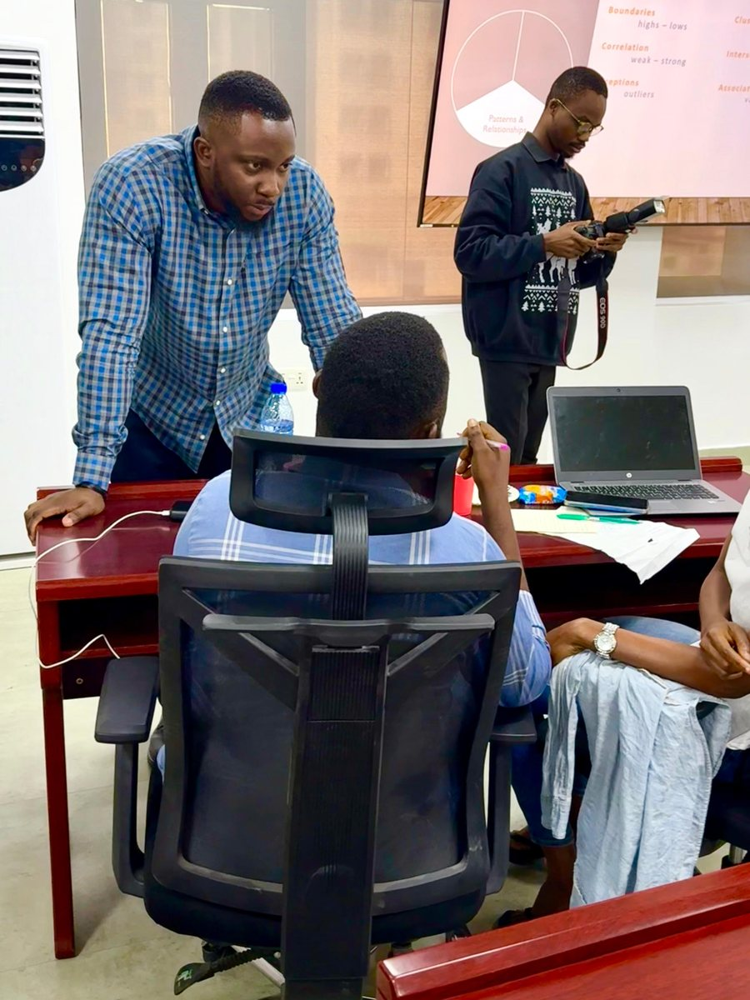

I speak about data science and machine learning: agents you can audit, retrieval that cites its sources, and measuring models honestly. I like talks that show the bugs as well as the demos, because that's where the learning is.
Up next: PyData Hull, where I'll be talking about shipping ML systems that can prove they work.

If you'd like me to speak at your meetup, conference, or team session, send me an email. I'm happy to tailor a talk or run a hands-on workshop.
A confession that explains my style: I also play and write music, so I prepare talks the way I prepare songs. Rehearsed until they feel effortless, and always tuned to the room.
I write on Medium about practical data science, usually with code attached:
Build notes from my recent systems, including the bugs, because the honest version is more useful: